[Back to
Intro]
WHY GEOMETRY AND TOPOLOGY?
I
find Geometric solutions to practical Financial problems particularly powerful (here
is an example). The connection between Quantitative Finance and Geometry may not
be evident, however Geometry can be found at the root of fields as distant as
Finance and Biology (see a connection
here). Geometry
allows you to formulate a problem visually and search for a solution in
non-symbolic terms. How else were the Ancient Greeks able to solve
complex Mathematical problems without ever using equations?
Archimedes solved integral calculus questions
using Geometric arguments, more than 1900 years before calculus was
rediscovered by Leibniz and Newton.
Gauss' first breakthrough
was as a Geometer, and I suspect that the reason why Gauss'
personal diaries are devoid of motivation is partly because he first approached problems
Geometrically (like a Greek mathematician), and knew exactly where the arguments were leading him.
|
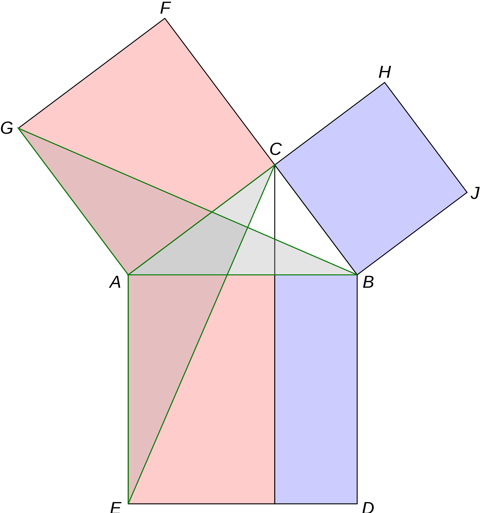
Pythagoras' Theorem has received at least 370 different proofs
over the last 25 centuries, many of them Geometrical. This
theorem, and its generalization into the
Law of Cosines,
are at the center of most Risk models |
Similarly,
Topology helps unveil the complex structure governing a system.
The
"Seven Bridges of Königsberg" problem inaugurated that field in
Mathematics, when Euler recognized that
understanding a system required
modeling the logical and hierarchical interrelations between its components. While at Cornell University, Richard Feynman
revolutionized nearly every aspect of theoretical physics thanks to his
Topological approach to
handling the morass of
calculations involved in quantum
electrodynamics (QED) problems.
The
goal of my research is to forecast financial systems and make optimal
decisions under uncertainty. In order to achieve that, I may apply
probability theory, inferential statistics, vector spaces, stochastic calculus,
etc. However, when possible, I prefer to state a problem Geometrically or
Topologically, because it gives
me the leverage to comprehend it before
committing equations to a paper. For example,
here is a Geometry
work
from Ronald Fisher
dealing with Karl Pearson's
(a Geometry professor at
Gresham
College) most famous invention: Correlation. Geometry is the right way to
think about correlations. And when it comes to understanding complex dynamic
systems with logical and hierarchical relationships, Topology is the way to
go!
|
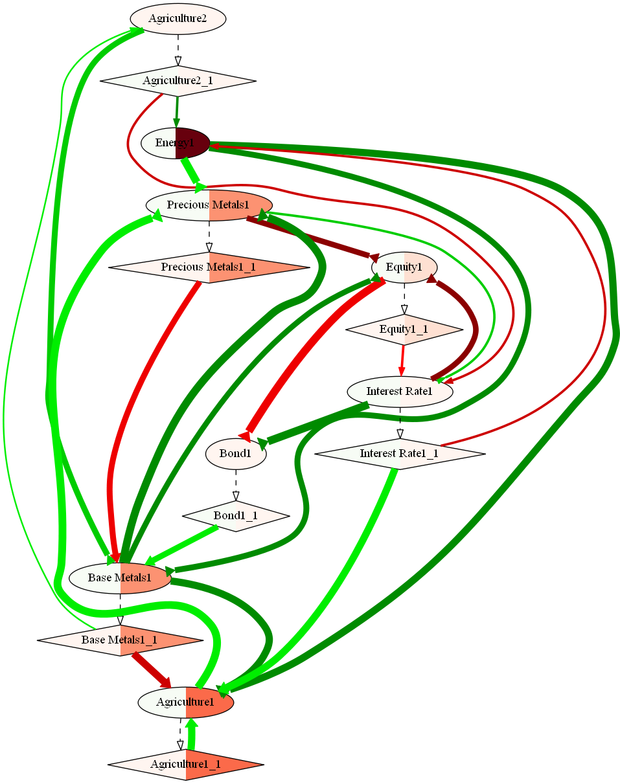
Financial markets
are prime examples of complex dynamic networks: We can only
understand the behavior of one price after modeling the dynamics of
all prices. The above figure shows the
Stochastic Flow Diagram of
the global financial system, following an Energy shock |
Academic genealogy
studies how schools of thought are transmitted over generations, from advisors
to doctoral students. Studying one's academic ancestry is partly an amusement, a
tribute or a homage,
however it can also explain how some of us came (consciously or unconsciously) to think about these problems Geometrically
and Topologically.
Mathematicians with shared academic ancestors are more likely to read each
others' publications and eventually work together. The tables below show my
line of doctoral advisors, which
quickly converges from Mathematical Finance to Geometry and Topology (here
is a chart according to the
Math Genealogy Project).
| |
STUDENT |
ADVISOR(S) |
DISSERTATION |
FIELD |
YEAR |
UNIVERSITY |
COMMENTS |
|
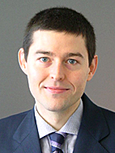 |
Marcos López de Prado |
Eva del Pozo |
Advances in
High Frequency Strategies |
Mathematical
Finance |
2011 |
Complutense
University |
My
second doctoral dissertation. My
first dissertation (2003) dealt with portfolio optimization under
non-normal and serially dependent returns, and was published in 2004. At
that time I was Head of Quantitative Equity Research at UBS Wealth
Management, and portfolio construction for Ultra-High-Net-Worth
Individuals (>$US30m) was a critical question for the bank, requiring
the proper modeling of hedge fund returns. |
|
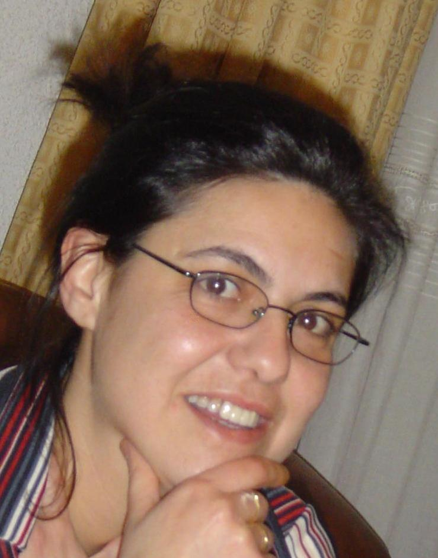 |
Eva del Pozo |
Jose A. Gil Fana |
Mathematical Models for Controlling Solvency in General Insurance
Policies |
Mathematical Finance |
1997 |
Complutense University |
Professor of Mathematical Finance (2008), and Vice-Dean of Quality
Evaluation (2011) at Complutense's Business School. Her research focuses on the pricing of contingent claims in the general insurance
business, of which financial options are a particular case. |
|
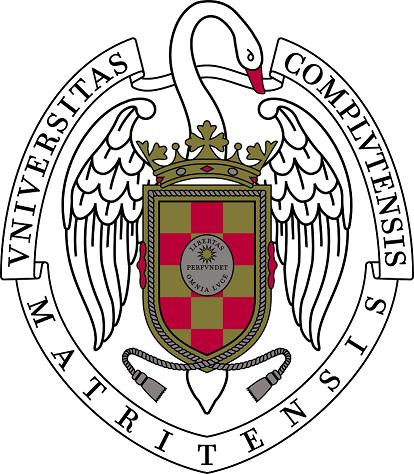 |
Jose A. Gil Fana |
Ubaldo Nieto de Alba |
Mathematical Modelling of the General Insurance Business |
Mathematical Finance |
1983 |
Complutense University |
Full professor of Mathematical Finance.
Author of numerous textbooks and papers on contingent claims, operations
research, insolvency forecasts, mathematical modeling of claim counts,
etc. |
|
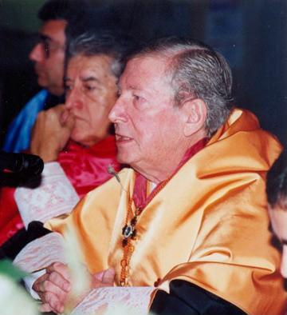 |
Ubaldo Nieto de Alba |
Angel Vegas Perez |
Economic
foundations in the Mathematics of Financial Operations |
Mathematical Finance |
1962 |
Complutense University |
Dean of Complutense's Business
School (1970-1973), Senator (1977-1982), President of the Senate's
Finance Commission (1977-1982), President of the
Government Acountability Office since
1982. Member of the Royal Academy of
Economic Science since 1989.
Order of Alfonso X the Wise. |
|
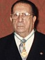 |
Angel Vegas Perez |
Miguel Vegas y Puebla-Collado;
Julio Rey Pastor |
A Survey of Mathematics
Applied to Economic Studies |
Mathematical Finance |
1940 |
Complutense University |
Prof. Vegas Perez was the son of the
eminent mathematician, Prof.
Miguel Vegas y Puebla-Collado.
In the year 1948, he published the book
A General
Course of Mathematics Applied to Economics, which became the
standard Mathematical Finance textbook used in Spanish-speaking
Universities. Dean of Complutense's Business School (1968-1970), member
of the
United Nations Demographics Commission,
Order of Merit of the Italian Republic,
Order of Isabella the Catholic, etc. Member of the Royal Academy of Economic Science since
1982. |
Source: American Mathematical Society, Complutense University's
Dissertations Catalogue, Spain's Ministry of Science and Royal Academy of
Economic Science.
|
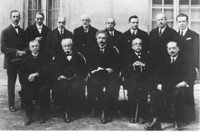
Differential
Geometry plays a
critical role
in the Theory of Relativity. Miguel Vegas y Puebla-Collado wrote his 1888 doctoral dissertation on the Geometry of
Curved Spaces, and became a leading researcher in that field. In this photo we can see Vegas
(first from the left,
seated) and Einstein (seated at the center) together, meeting at a Conference
in 1923.
Complutense's
Blas
Cabrera is seated at the right end |
FOLLOWING THE BRANCH OF
PROF. MIGUEL VEGAS
| |
STUDENT |
ADVISOR |
DISSERTATION |
FIELD |
YEAR |
UNIVERSITY |
COMMENTS |
|
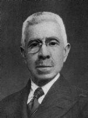 |
Miguel Vegas y Puebla-Collado |
Eduardo Torroja y Caballe |
A
Geometric Study of Third-Order Differentiable Curves |
Geometry |
1888 |
Complutense University |
Prof. Vegas y Puebla-Collado's
Analytic Geometry was an internationally acclaimed tractatus of
Geometry, which followed the influences of Prof. Torroja, a disciple of
Prof. Staudt. Member of the
Royal Academy of Sciences since 1905. |
|
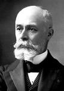 |
Eduardo
Torroja y Caballe |
Karl Georg Christian von Staudt |
On
Staudt's Method of Projective Geometry |
Geometry |
1873 |
Complutense University |
He obtained his Math degree from
Complutense in 1864. Very early in his studies he became a disciple of
Karl Georg Christian von Staudt, whose ideas of Geometry he embraced and
promoted among his fellow mathematicians for the rest of his life.
Member of the
Royal Academy of Sciences since 1891. |
|
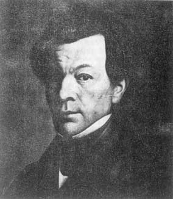 |
Karl Georg Christian
von Staudt |
Carl Friedrich Gauss |
On
Ephemerides and the Orbits of Asteroids |
Geometry |
1822 |
University of Erlangen-Nuremberg |
The book Geometrie der Lage (1847)
was a landmark in projective geometry. Staudt went beyond real
projective geometry and into complex projective space in his three
volumes of Beiträge zur Geometrie der Lage published from 1856 to
1860. The Staudt-Clausen theorem is partially named after him.
|
|
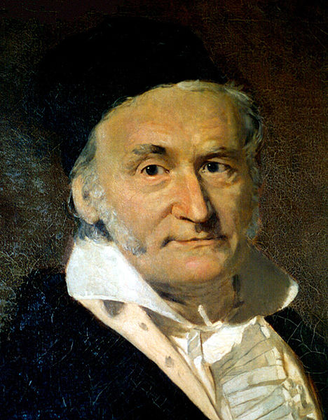 |
Carl Friedrich Gauss |
Johann Friedrich Pfaff |
Demonstratio nova theorematis omnem functionem algebraicam rationalem
integram unius variabilis in factores reales primi vel secundi gradus
resolvi posse |
Algebraic
Number Theory |
1799 |
University of Helmstedt |
Sometimes referred to as Princeps
Mathematicorum. In his 1799 doctorate in absentia,
A new proof of
the theorem that every integral rational algebraic function of one
variable can be resolved into real factors of the first or second degree,
Gauss proved the
Fundamental Theorem of Algebra. Mathematicians including d'Alembert
had produced false proofs before him, and Gauss's dissertation contains
a critique of
d'Alembert's work. Ironically, by today's standard,
Gauss's own attempt is not acceptable, owing to implicit use of the
Jordan curve theorem. However, he subsequently produced three other
proofs, the last one in 1849 being generally rigorous. |
Source: American Mathematical Society, Complutense University's
Dissertations Catalogue and Spain's Royal Academy of Sciences.
FOLLOWING THE BRANCH OF
PROF. JULIO REY PASTOR
| |
STUDENT |
ADVISOR(S) |
DISSERTATION |
FIELD |
YEAR |
UNIVERSITY |
COMMENTS |
|
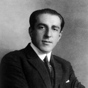 |
Julio Rey Pastor |
Eduardo Torroja y
Caballe;
Felix Klein |
Correspondence of Elemental Figures with application to their Derived
Figures |
Geometry |
1909 |
Complutense University |
Between
1911 and 1914, he studied at the University of Berlin and the University
of Gottingen, under the supervision of Felix Klein. During that period,
he also studied under the supervision of Professors
Hermann Schwarz,
Friedrich Hermann Schottky (father of Walter Schottky, Nobel Prize
in Physics in 1911), and
Ferdinand Georg Frobenius. Rey Pastor’s scientific work focused both
on research, and textbooks and articles for the general public. They
reflected the changes that were taking place in mathematics. |
|
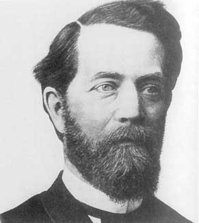 |
Felix Klein |
Rudolf Lipschitz |
Über
die Transformation der allgemeinen Gleichung des zweiten Grades zwischen
Linien-Koordinaten auf eine kanonische Form |
Geometry |
1868 |
University of Bonn |
Klein's contributions
spanned group theory, complex analysis, non-Euclidean geometry, and the
connections between geometry and group theory. His 1872
Erlangen Program,
which classified geometries by their underlying symmetry groups, was a hugely
influential synthesis of much of the mathematics of the day. |
 |
Rudolf Lipschitz |
Peter Gustav Dirichlet |
Determinatio status magnetici viribus inducentibus commoti in ellipsoide
|
Geometry |
1853 |
University
of Berlin |
While Lipschitz gave
his name to the Lipschitz continuity condition, he worked in a broad
range of areas. These included number theory, algebras with involution,
mathematical analysis, differential geometry and classical mechanics. |
 |
Peter Gustav Dirichlet |
Simeon Poisson;
Joseph Fourier |
Partial Results on Fermat's Last Theorem, Exponent 5 |
Number Theory |
1827 |
University of Bonn (H.C.) |
Dirichlet made deep contributions to
number theory (including creating the field of
analytic
number theory), and to the theory of
Fourier series
and other topics in mathematical analysis; he is credited with being one
of the first mathematicians to give the modern formal definition of a
function. |
|
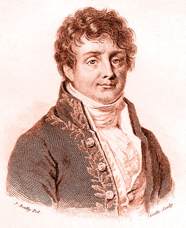 |
Joseph Fourier |
Joseph Louis Lagrange |
Unknown |
Analysis |
c.1795 |
École
Normale Supérieure |
In 1795, Fourier was appointed to the
École Normale Supérieure, and subsequently succeeded Joseph-Louis
Lagrange at the
École
Polytechnique. He discovered the Fourier series and their
applications to problems of heat transfer and vibrations. The
Fourier
transform and
Fourier's Law
are also named in his honor. |
 |
Joseph Louis
Lagrange |
Leonhard Euler |
|
Analysis |
|
Prussian Academy of Science |
Lagrange did not receive a doctoral degree,
however Euler played the role of mentor and advisor in his advanced
studies. On the recommendation of Euler and d'Alembert, in 1766 Lagrange succeeded Euler as the director of
mathematics at the Prussian Academy of Sciences in Berlin, where he
stayed for over twenty years, producing a large body of work and winning
several prizes of the French Academy of Sciences. Lagrange's treatise on
analytic mechanics, written in Berlin and first published in 1788,
offered the most comprehensive treatment of classical mechanics since
Newton and formed a basis for the development of mathematical physics in
the nineteenth century. |
|
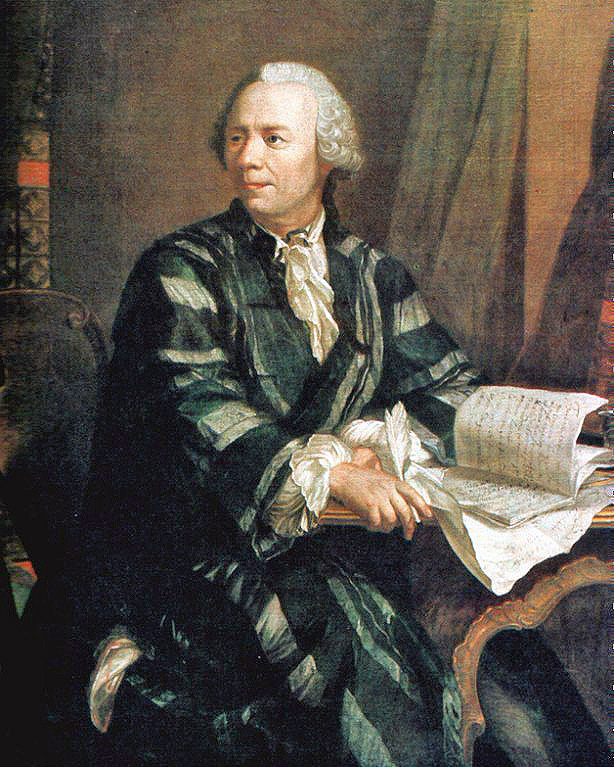 |
Leonhard Euler |
Giambattista Beccaria |
Dissertatio physica de sono |
Physics |
1726 |
University of
Basel |
Euler is considered to be the preeminent
mathematician of the 18th century, and one of the greatest
mathematicians to have ever lived. He is also one of the most prolific
mathematicians ever, possibly second only to
Paul
Erdös: His
collected works fill 60–80 quarto volumes. A statement attributed to
Pierre-Simon Laplace
expresses Euler's influence on mathematics: "Read Euler, read Euler,
he is the master of us all." |
Source: American Mathematical Society and Complutense University's
Dissertations Catalogue.
{kind=link}